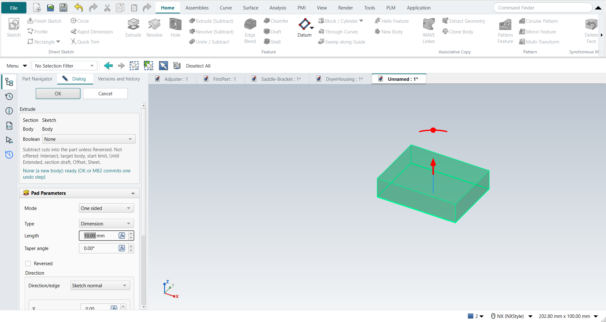
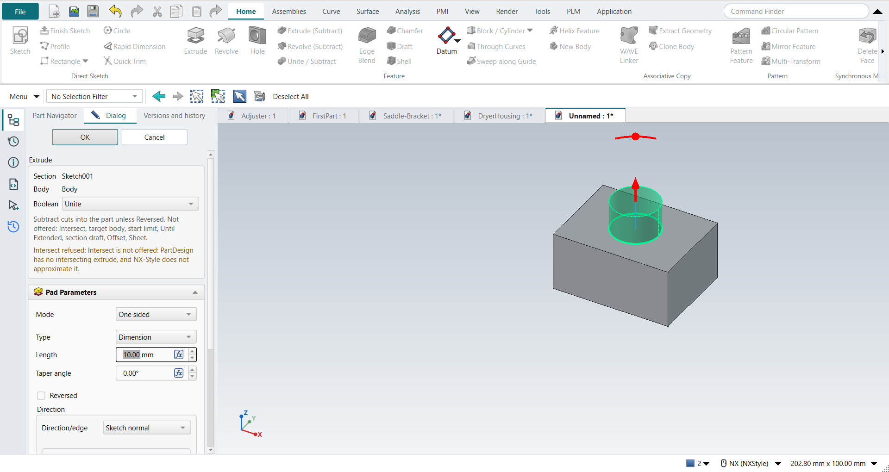
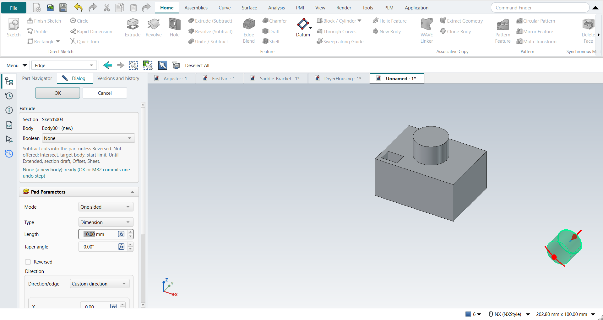

Tutorial AE: One Extrude, every way
| Source |
Our design. It is the acceptance case of NX-Style’s Extrude command (Extrude), not a book exercise |
| You learn |
the Extrude dialog’s Boolean list, what Cancel and Esc leave behind (nothing), one undo step per command, Edit Parameters from the MB3 menu and the ribbon |
| Sizes |
a 40 × 30 × 20 block; an 8 mm radius boss 10 high on top; an 8 × 6 pocket 5 deep in the top; a separate 6 mm radius cylinder 15 long, 100 mm away |
Step by step
1. The block: Boolean None (a new body)
Ctrl+N, then X with nothing selected. Pick the XC-YC plane and draw a 40 × 30 rectangle from the origin (R). Ctrl+Q opens the Extrude dialog. The part has no solid yet, so the Boolean is None: a new body. Type 20 for the distance and press MB2.

2. The boss: Unite
Select the top face and press X. The sketch opens on the face. Draw an 8 mm radius circle in the middle (O) and press Ctrl+Q. The Boolean is now Unite, because the part has a solid. Intersect is in the list but greyed out. Choosing it anyway changes nothing, and the dialog says why. Type 10 and press MB2.

3. The pocket: Subtract
Select the top face again and press X. Draw an 8 × 6 rectangle near a corner, then Ctrl+Q. Choose Subtract in the Boolean list. The preview changes from adding material to cutting it, and no undo step is added. Type 5 and press MB2. The pocket cuts into the part.
4. A separate body: Boolean None
X with nothing selected. Pick the XC-ZC plane and draw a 6 mm radius circle 100 mm from the part. The Boolean Unite is inferred, but the circle misses the part. The dialog shows the error and OK is unavailable, so MB2 does nothing. Choose None, type 15 and press MB2. The cylinder is a second Body. The first one is unchanged.

5. Edit, Cancel, edit, OK
MB3 on the first extrude in the Part Navigator, then Edit Parameters. Type 35: the preview grows. Press Cancel. The distance is 20 again, and the undo list is unchanged. Select the extrude again and click Edit Parameters on the ribbon. Type 25 and press MB2. The boss and the pocket move up with the top face. This edit is one undo step, Edit Extrude.
6. Undo, Redo, reopen
Ctrl+Z takes back the edit. A second Ctrl+Z takes back the whole new-body extrude: the Body, its binder and the Pad go together. Ctrl+Y twice brings both back.
Type Extrude (Subtract) into the Command Finder and press Enter. The plane pick appears; Cancel it. Nothing is added to the part or to the undo list.
Save (Ctrl+S), close and reopen the part. Then Edit Parameters on the pocket: the Boolean reads Subtract. Type 12 and press Esc, which leaves the pocket as it was.
The replay
| # | In the book (NX) | In FreeCAD NX-Style | Result | Notes |
|---|---|---|---|---|
AE1 |
File > New (Ctrl+N), Model template |
Ctrl+N |
same |
new document ['Unnamed'] |
AE2 |
Extrude (X) with nothing selected, pick the XC-YC plane |
X key, plane row + MB2 |
same |
picked XY-plane (Base plane); command controller started: True |
AE3 |
Rectangle ® 40 x 30 from the origin, MB2 |
R key + 2 MB1 clicks + MB2; sizes applied |
same |
tool True; 4 curves; ended True |
AE4 |
Finish Sketch: the Extrude dialog, Boolean inferred None (New Body) |
Ctrl+Q; the NX command box above FreeCAD’s Pad panel |
same |
Boolean 'None' (list enabled True); Intersect offered but disabled True; status 'None (a new body): ready (OK or MB2 commits one undo step)'; OK enabled True; not supported shown: True |
AE5 |
End = Value 20, OK |
'lengthEdit' = 20 mm, MB2 = OK |
same |
same solid as the reference: 0 mm³ differ, box within 0 mm, 6 faces (6 in the reference); controller: committed new_body, undo step 'Extrude', 1 step(s) added |
AE6 |
Top face selected, Extrude (X): circle 8 mm radius |
select face + X; O key + 2 MB1 clicks + MB2; size applied |
same |
sketch on [(<PartDesign::Pad>, ('Face6',))] |
AE7 |
Boolean inferred Unite (the part has a solid) |
the NX command box |
same |
Boolean 'Unite'; status 'Unite: ready (OK or MB2 commits one undo step)'; OK True |
AE8 |
Boolean Intersect |
chose 'Intersect' in the Boolean list |
differs |
refused in the panel, not approximated: 'Intersect refused: Intersect is not offered: PartDesign has no intersecting extrude, and NX-Style does not approximate it.'; Boolean back to 'Unite', the Pad unchanged True |
AE9 |
End = Value 10, Boolean Unite, OK |
'lengthEdit' = 10 mm, MB2 = OK |
same |
same solid as the reference: 0 mm³ differ, box within 0 mm, 8 faces (8 in the reference); controller: committed unite, undo step 'Extrude', 1 step(s) added |
AE10 |
Top face, Extrude (X): rectangle 8 x 6 near the corner |
select face + X; R key + 2 MB1 clicks + MB2; sizes applied |
same |
tool True; 4 curves |
AE11 |
Boolean Subtract (was inferred Unite) |
'Subtract' in the Boolean list |
same |
Boolean 'Unite' → 'Subtract'; the preview Pad replaced by a Pocket (2 Pads left), no undo step added (0); status 'Subtract: ready (OK or MB2 commits one undo step)' |
AE12 |
End = Value 5 into the part, OK |
'lengthEdit' = 5 mm, MB2 = OK |
same |
same solid as the reference: 0 mm³ differ, box within 0 mm, 13 faces (13 in the reference); controller: committed subtract, undo step 'Extrude', 1 step(s) added; Subtract cuts against the sketch normal unless Reversed (NX keeps the direction and you reverse it) |
AE13 |
Extrude (X), pick the XC-ZC plane (Type Filter set to Edge before) |
X key, plane row + MB2 |
same |
picked XZ-plane (Base plane); Type Filter during the command: 'Edge', gate None, enabled False |
AE14 |
Circle 6 mm radius, 100 mm from the part |
O key + 2 MB1 clicks + MB2; size applied |
same |
tool True; 1 curves |
AE15 |
Inferred Unite with a section that misses the part; MB2 |
MB2 = OK |
same |
error shown: 'Unite would leave a separate solid: the extrusion does not touch the part (choose None for a new body)'; OK enabled False; dialog still open after MB2 True (NX: 'tool body does not intersect the target') |
AE16 |
Boolean None (a new body) |
'None' in the Boolean list |
same |
bodies ['Body', 'Body001']; status 'None (a new body): ready (OK or MB2 commits one undo step)'; OK True |
AE17 |
End = Value 15, Boolean None (a new body), OK |
'lengthEdit' = 15 mm, MB2 = OK |
same |
new body Body001: same solid as the reference: 0 mm³ differ, box within 0 mm, 3 faces (3 in the reference); the first body unchanged: same solid as the reference: 0 mm³ differ, box within 0 mm, 13 faces (13 in the reference); controller: committed new_body, undo step 'Extrude', 1 step(s) added; made of ['SubShapeBinder', 'Pad']; active Body still Body; Type Filter afterwards 'Edge', gate edge, enabled True |
AE18 |
MB3 on the first Extrude in the Part Navigator > Edit Parameters |
MB3 menu entry |
same |
menu entries ['Edit Pad', 'Set Face Colors', 'Suppressed', 'Set Tip', 'Move Object To…', 'Move Feature After…', 'Toggle Freeze', 'Placement', 'Edit Parameters', 'Toggle Visibility', 'Show Selection', 'Hide Selection']; panel open True; Boolean 'None' locked True (changing it would replace the feature) |
AE19 |
Preview 35 mm, then Cancel |
'lengthEdit' = 35 mm, Cancel button |
same |
preview showed Length 35 mm (top at 35 mm); after Cancel Length 20 mm, same solid as the reference: 0 mm³ differ, box within 0 mm, 13 faces (13 in the reference); undo steps added 0; objects left to recompute [] |
AE20 |
Design change: Edit Parameters, End 20 → 25, OK |
ribbon 'Home › Edit Feature > Edit Parameters' (panel True), 'lengthEdit' = 25 mm, MB2 = OK |
same |
same solid as the reference: 0 mm³ differ, box within 0 mm, 13 faces (13 in the reference); the boss and the pocket follow the top face; the separate body unchanged True; controller: committed new_body, undo step 'Edit Extrude', 1 step(s) added |
AE21 |
Undo (Ctrl+Z) twice, Redo (Ctrl+Y) twice |
Ctrl+Z, Ctrl+Z, Ctrl+Y, Ctrl+Y |
same |
first undo takes back the edit (same solid as the reference: 0 mm³ differ, box within 0 mm, 13 faces (13 in the reference)); the second the whole New Body extrude (1 body left, binders left []); redo restores both (same solid as the reference: 0 mm³ differ, box within 0 mm, 13 faces (13 in the reference); cylinder True) |
AE22 |
Command Finder: 'Extrude (Subtract)', Enter; Cancel the plane pick |
typed into the Command Finder + Enter; Cancel button |
same |
command started True (Boolean asked: None); ended cancelled: no section: the plane pick was cancelled; objects +0, undo steps +0 |
AE23 |
Save (Ctrl+S) |
file name given once by script (the system file dialog is not driven); a change, then the Ctrl+S key |
same |
ExtrudeAE.FCStd rewritten by Ctrl+S: the file holds the change and the part is unmodified afterwards (modified before the key: True); FreeCAD format, not .prt |
AE24 |
Reopen the part |
close, File > Open (by script) |
same |
part: same solid as the reference: 0 mm³ differ, box within 0 mm, 13 faces (13 in the reference); cylinder: same solid as the reference: 0 mm³ differ, box within 3.6e-15 mm, 3 faces (3 in the reference); Extrudes read back as ['new_body', 'unite', 'subtract', 'new_body'] |
AE25 |
Reopened part: Edit Parameters on the pocket, 12 mm, Esc |
ribbon 'Home › Edit Feature', typed 12, Esc |
same |
Boolean read back 'Subtract'; after Esc depth 5 mm, same solid as the reference: 0 mm³ differ, box within 0 mm, 13 faces (13 in the reference); undo steps added 0 |
| Result | Means |
|---|---|
same |
The book’s NX steps work as written. |
differs |
It works, but the FreeCAD way is different; the notes say how. |
limit |
The book’s way fails in FreeCAD itself; a workaround follows in the next steps. |
missing |
FreeCAD has no such function; a stand-in follows. |
skipped |
Not replayed; the notes give the reason. |
FAILED |
Did not work. |
Each solid is compared with the same solid built with FreeCAD’s Part API (nxstyle/geomcheck.py). Equal volume alone would not show that a pocket is in the wrong place.
What differs from NX
-
The dialog has two parts: the NX command box (section, body, Boolean, errors) above FreeCAD’s own Pad or Pocket panel (limits, direction, draft).
-
Subtract cuts into the part by default. NX keeps the sketch normal for every Boolean, so there you reverse the direction.
-
Unite and Subtract work on the Body that holds the sketch. NX lets you pick the target body.
-
A sketch made inside Extrude stays as its own undo steps. Undoing the extrude leaves the sketch.